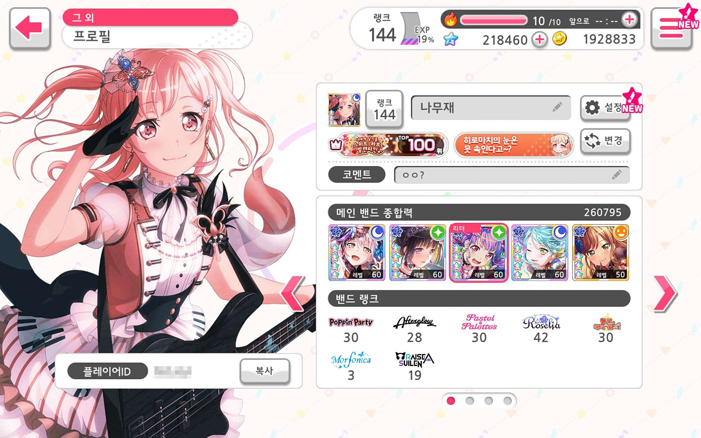
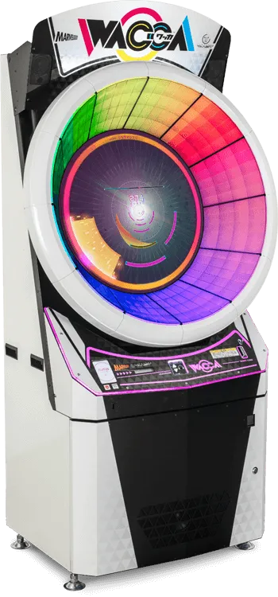
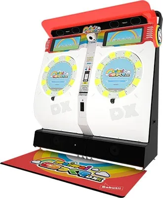
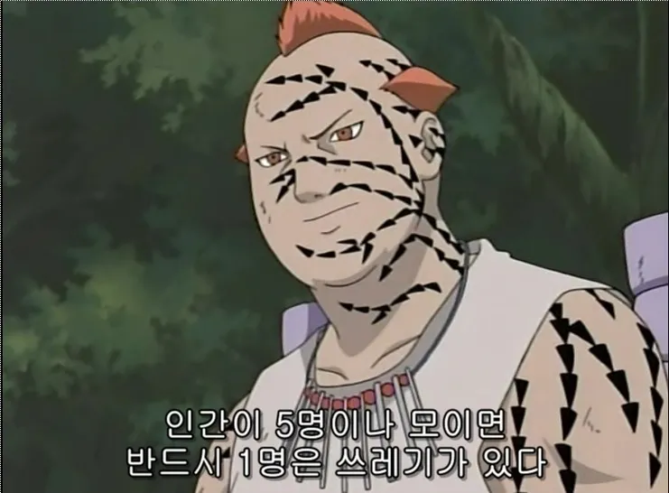

1. 리듬게임
일단, 먼저 리듬게임부터 설명드려야겠네요.
제 첫 리듬게임은 '뱅드림 걸즈 밴드 파티'였습니다.
1-1. 뱅드림 걸즈 밴드 파티
2018년 2월 일본의 Craft egg사(현재는 부시로드 개발)에서 개발한 '뱅드림 걸즈 밴드 파티'(이하 뱅드림)라는 게임을 카카오 게임즈에서 수입해왔습니다.
중학생 시절 저는 집에서 할 게 없던 터라 플레이 스토어를 뒤져보는 게 하루의 루틴이 되었었는데,
딱 뱅드림이 눈에 띄어서 한번 플레이를 해보았습니다.
리듬게임이라는 장르를 처음 접해보는 저에게는 너무나도 신선하게 다가왔습니다. 9개의 레인이 화면에 그려져있고
화면 위에서 내려오는 노트를 음악에 맞추어 누른다는 그 행위 자체가 저에게는 신선하게 다가왔습니다.
그 때 부터였습니다. 제가 리듬게임에 푸욱 빠져서 지내게 된 것이... 물론 후회는 안 합니다.
오히려 제게 좋은 경험을 안겨주었으니까요. 저를 트위터라는 SNS에서 같은 취미를 공유하는 사람들을 만나게 해주었고,
그 사람들과 같은 관심사의 이야기를 나눌 수 있어 행복한 시절을 보낼 수 있었습니다.
그것이 제게 큰 동기가 되어 정말 열심히 게임을 플레이 했었네요.

정말... 열심히 했었습니다.
하지만 아쉽게도 2024년 1월 31일 한국 서비스가 종료되어 이젠 남아있는 서비스 종료 전 프로필 캡쳐 사진뿐이네요.
1-2. DJMAX RESPECT V
두 번째 파트는 DJMAX RESPECT V입니다.
뭐, 다들 아시다시피 DJMAX RESPECT V는 NEOWIZ의 ROCKY STUDIO에서 개발한 리듬게임입니다.
이 게임도 제게 특별한 게임인데요, 리듬게임이라는 장르에 점차 관심을 가지게 되던 시기에 DJMAX 시리즈를 알게되었습니다.
그래서 꼭 플레이 해보고 싶다는 생각이 들었지만 당시 최신작은 PS4의 DJMAX RESPECT였어서
그 당시 돈 없는 중학생은 그냥 패턴 영상을 보며 대리만족만 하고 있었습니다.
그러던 어느 날 DJMAX RESPECT의 PC 버전이 출시한다는 소식을 접하고, 차곡차곡 돈을 모아 얼리엑세스 당일 날 게임을 구매했습니다.
기대감을 안고 게임을 구매 후 실행 한 순간 저는 다른 세계를 경험했습니다.
기존에 하던 게임들은 그저 화면를 터치하는 모바일 게임이었기에 '타격감'이 좀 부족했었습니다.
그런데 PC 환경에서의 플레이는 확실히 달랐습니다. 키보드라는 확실하게 물리적인 입력 방식이 있었기에
노트를 눌러 그것이 처리되었다는 피드백이 확실하게 느껴졌습니다.
그리고, DJMAX 시리즈의 특징인 '키음'시스템이 게임에 더욱 더 몰입할 수 있게 해줬습니다.
내가 지금 이 음악을 연주하고 있다는 느낌을 줄 수 있었기 때문에 더욱 더 만족을 하지 않았나 싶습니다.
다만 초기에는 아쉬운 부분이 많았습니다. 최적화가 좋지 않가 게임이 GTA V보다 더 사양을 잡아 먹는다라던가
인풋렉, 싱크 어긋남 등등 많은 문제가 있었지만, 그럼에도 저는 DJMAX 시리즈를 다시 PC에서 플레이 할 수 있다는 이유 하나로
저는 엄청난 만족감을 얻고 더욱 리듬게임에 빠져들 수 있었습니다.
1-3. 아케이드 리듬게임
저는 DJMAX RESPECT V에 만족하고 있었습니다. BEMANI 시리즈를 알게 되기 전 까진.
BEMANI시리즈는 KONAMI Amusement의 리듬 시뮬레이션 브랜드입니다.
쉽게 말 하면 코나미의 "아케이드 리듬게임 시리즈"입니다.
자, 일반적으로 오락실 하면 뭐가 떠오르시나요? 철권? 인형뽑기? 펀치 기계? 물론 요즘 오락실엔 이 세가지가 있기는 합니다.
하지만 가장 큰 비중을 차지하는 건 "아케이드 리듬게임" 그 중에서도 가장 역사가 긴 BEMANI 시리즈가 대표적이라고 할 수 있습니다.
그리고, 제가 BEMANI 시리즈에 입문하게 된 게임은...
1-3 A. SOUND VOLTEX VIVID WAVE
제가 BEMANI 시리즈, 더 크게 봐서 "아케이드 리듬게임"의 입문 작품은 KONAMI의 SOUND VOLTEX VIVID WAVE입니다.
한창 DJMAX를 열심히 하던 시절에 지인에게 Discord DM이 왔습니다. "이런 게임도 있는데 해볼 생각 없어?"라고요.
메세지와 함께 같이 온 유튜브 동영상은 저에게 또 새로운 충격을 가져다 주었습니다.
게임과 1:1 매칭되는 "그 게임만의 특별한 조작 체계" 오로지 그 게임만을 위해서 설계 되어있는 조작 체계는
영상을 보고 있던 저에게 "지금 당장 플레이 하고 싶어"라는 욕구를 만들어냈습니다.
그 때가 코로나-19가 한창이어서 밖에 나가지 않는 추세였는데, 저는 플레이 하고 싶다는 욕구를 이기지 못 하고
이 주변에 있는지 부터 조사 한 후 바로 밖에 나가 오락실로 향했습니다.
오락실에 도착 해 처음 플레이 한 순간, 저는 놀랄 수 밖에 없었습니다.
첫 번째로 "아케이드 리듬게임의 신선함"그리고 "아직 내가 경험 하지 못 한 리듬게임이 많구나"를 확실하게 느꼈습니다.
그 때부터 저는 아케이드 리듬게임에 푹 빠져 살았습니다.
1-3 B. WACCA
한창 SOUND VOLTEX만 하던 시절 오락실의 기기 배치가 바뀐 날이 있었습니다.
사실 기기 배치가 바뀐다고 해서 뭐 달라지는 건 크게 없는데, 게임을 하는 중에 뒤에서 LED를 발광하는 게임이 계속 눈에 밟혔습니다.
네, 그게 WACCA입니다. LED가 얼마나 밝았냐 하면... 화면에 반사된 LED가 매우 거슬렸습니다.
생겨먹은 것도 뭐 세탁기마냥 생겼는데 maimai가 드럼 세탁기라면 WACCA는 통돌이...?


(좌)WACCA / (우) maimai DX
보시다시피 진짜 그렇게 생겨 먹었고 LED도 매우 밝습니다.
그 때 아마 "도대체 뭔 게임이길래 저리 밝지?"싶어서 코인을 넣고 해봤던 걸로 기억하는데, 생각보다 재미가 있어서 놀랐었습니다.
가운데 원형의 디스플레이들 둘러 싼 LED 적외선 패널을 터치 해 노트를 처리하는 간단한 게임이지만, 생각보다 어렵습니다.
노트가 위, 아래, 좌, 우 패널 전체를 활용해서 내려오기 때문에 노트를 읽는 능력을 꽤나 요구합니다. 거의 뭐 준 헬스입니다.
확실히 그냥 서서 버튼과 아날로그 디바이스만 조작하는 SOUND VOLTEX와는 달리 팔 전체를 사용해야하는 게임 방식인지라
체력소모가 강한 편이지만, "상당히 재밌습니다."
상체를 움직여가며 체감하는, "체감형 리듬 시뮬레이션"이라고 볼 수 있겠네요.
WACCA를 플레이 하며 게임에 더욱 빠져들었고, 처음으로 리듬게임 팀에 들어가게 되었습니다.
팀 이름은 Team RAINBOW였는데, 무려 한국인과 일본인들이 다 같이 있던 팀이었고 생각보다 규모가 커 리듬게임 쪽에서 유명하신 분들도 있었습니다.
물론 "그 보존 법칙"에 따라 팀이 박살이 나고 망하는 과정을 두 눈으로 직접 보기도 했습니다...

또 당신입니까... 뭐 간략하게 설명을 하자면(넘겨도 됩니다.)
팀 안에 게임 크랙 하는 사람이 있었고 그 사람이 팀장에게 업데이트 데이터를 유출 > 그걸 트위터에 "그대로 올리며" 업데이트 예상해보겠다 트윗
나중에 까발려지고 팀장직 사퇴라는... 아 그 크랙했던 사람도 뭐 오락실 사장이랑 엮이고(크랙 관련) 범죄 이력도 있던 화려하신 분입니다.
그 후로 2대 팀장이 생겼는데 그 팀장도 논란 하나 생겨서 팀이 터졌습니다.
그 후로 게임의 인기가 점점 시들시들 해지더니 서비스 종료까지 해서 이젠 추억의 게임이 되었네요.
1-4. PLATINA :: LAB
사실 솔직하게 말 하면 최근 리듬게임을 잘 못 했었습니다... 현생 문제도 있었고, 피지컬 문제도 있어서
사실 가장 큰 이유는 피지컬 문제입니다. 게임 실력이 완벽하게 정체기였으니까요.
그런데 2024년에 HIGH-END Games라는 곳에서 PLATINA :: LAB이라는 게임을 출시 하겠다는 소식을 접했습니다.
최근의 저는 NIKKE나 이터널 리턴을 하면서 지냈던지라 씹덕력(?)이 좀 늘어있었던 상태였고요.
김편집님이 시연하신 영상을 보니 적당한 씹덕력(??)과 아케이드 리듬게임같은 수록 곡들이 제게 확 와닿았습니다.
데모 시연을 보고 언제 출시될까...하고 기다리다 펀딩을 시작한다는 소식이 한번 더 들려왔습니다.
그런데, 아쉽게도 자금이 부족해...서 참여는 못 했고, 얼리엑세스가 열리자 마자 구매를 했습니다.
사실 이런 저런 리듬게임을 해왔던지라 큰 감흥은 없었습니다. 그저 새로운 게임이 나온 것 뿐이지요.
그런데 왜 일까요? 다시 한 번 열정이 불타오르기 시작했습니다.
곡 해금 요소가 빡세서 힘듭니다. 아직 버그가 좀 있습니다. 불편한 점이 있습니다.
그럼에도 불구하고 게임 자체가 재미있습니다. 리듬게이머에게 재미를 줄 수 있는 패턴이 매우 마음에 들었습니다.
마치 아케이드 리듬게임을 하는 듯한 느낌을 받았습니다.
게임의 요소 하나 하나가 게이머에게 동기를 부여해주려고 노력한 모습이 너무 마음에 들었습니다.
아무리 실력이 늘지 않아도 다시 한 번 좀 더 해보려 합니다.
2. 이터널 리턴(MOBA)
열심히 뒤에서 쓰고 있어요!
영상 편집자 사나루에 대해서
트친 사나루에 대해서